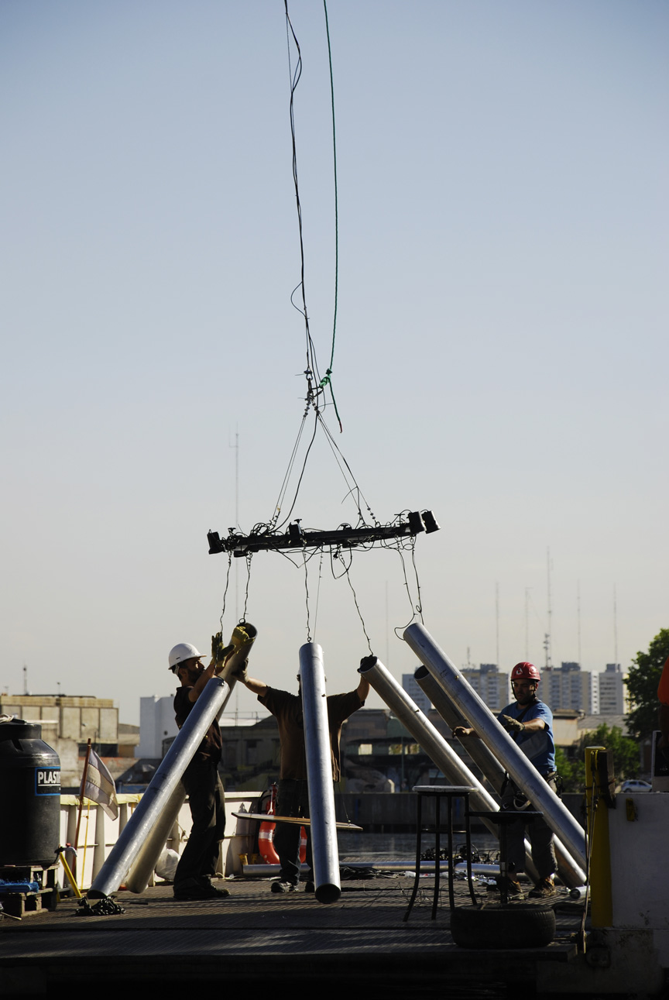
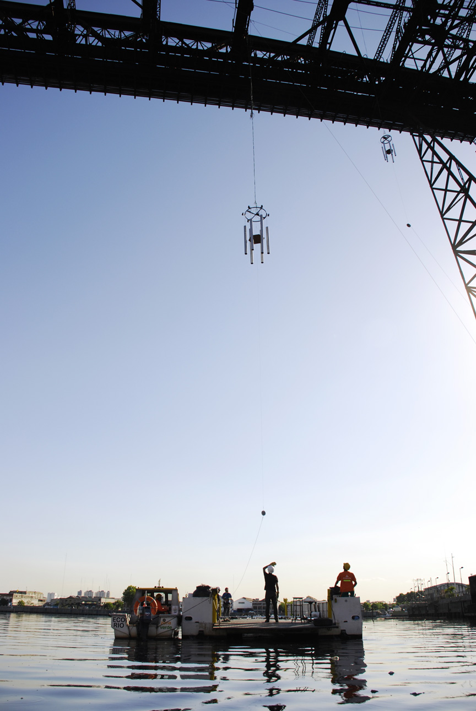
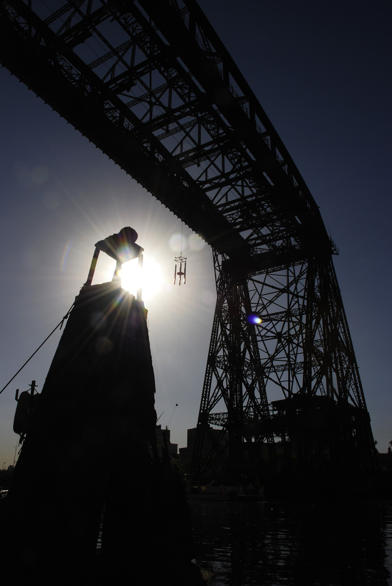

02 / 2011 / Instrumentos para sitio específico · Performance colectiva
Llamadores de Ángeles
Instrumentos tubulares para un puente y un río
Buenos Aires Sonora / LAPSo


Cinco grandes llamadores tubulares, suspendidos del Puente Transbordador Nicolás Avellaneda, fueron ejecutados durante una performance sonora colectiva sobre el Riachuelo.
Con Buenos Aires Sonora y el equipo de LAPSo construimos instrumentos para El Puente Suena II [Invocaciones], presentado dentro de Lluvia de Arañas sobre el Riachuelo, de Sigismond de Vajay.
Diseñamos los instrumentos a partir de tubos metálicos resonantes y un mecanismo de percusión suspendido. Los performers los ponían en movimiento desde abajo, incorporando el puente, el río y el espacio entre ambos a la performance.

Del laboratorio al río
Construimos y probamos los instrumentos tubulares en LAPSo antes de instalarlos en el puente. Las fotografías del montaje muestran el armado, la suspensión y la activación de los instrumentos desde una embarcación.
Los llamadores formaban parte de la performance de Buenos Aires Sonora. Otros performers utilizaban la estructura metálica del puente como fuente sonora, junto con voces grabadas y electrónica en vivo.
Idea de los instrumentos: Hernán Kerlleñevich. Diseño: Manuel Eguía. Luthería: Manuel Eguía, Ignacio Spiousas, Mauricio Biviano, Pablo Riera y Pablo Etchemendy. Performers en los grandes llamadores: Manuel Eguía, Ignacio Spiousas, Mauricio Biviano, Pablo Riera y Ramiro Vergara.